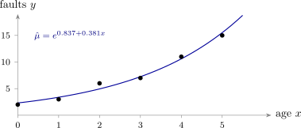

11.5 Poisson regression
For counts, the natural model is \(y_i \sim \text {Poisson}(\mu _i)\) with the canonical log link, \[ \log \mu _i = \mathbf {x}_i^\top \boldsymbol \beta , \qquad \mu _i = e^{\mathbf {x}_i^\top \boldsymbol \beta } , \] which keeps every mean positive. Increasing \(x_j\) by one unit multiplies the mean by \(e^{\beta _j}\), the rate ratio. By Theorem 11.4.2, the likelihood equations are \(\mathbf {X}^\top \mathbf {y} = \mathbf {X}^\top \hat {\boldsymbol \mu }\), the weights are \(w_i = \mu _i\), and the working response is \(z_i = \eta _i + (y_i - \mu _i)/\mu _i\). The log-likelihood is \(\sum [y_i\log \mu _i - \mu _i - \log y_i!]\), and the saturated model has \(\hat \mu _i = y_i\), so the deviance is \[ D = 2\sum _{i=1}^n\Bigl [y_i\log \frac {y_i}{\hat \mu _i} - (y_i - \hat \mu _i)\Bigr ] , \] in which the second term adds to zero when the model has an intercept (Problem 11.6.4).
Exposure and offsets
Counts are often collected over different amounts of exposure \(t_i\): different lengths of time, numbers of people or lengths of road. Then the model is for the rate \(\mu _i/t_i\), \(\log (\mu _i/t_i) = \mathbf {x}_i^\top \boldsymbol \beta \), that is, \[ \log \mu _i = \log t_i + \mathbf {x}_i^\top \boldsymbol \beta . \] The term \(\log t_i\) is an offset: a regressor whose coefficient is fixed at \(1\), not estimated.
Overdispersion
The Poisson model forces \(\operatorname {Var}(y) = \mu \). Counts are often more variable than that, because of differences between units that the regressors do not capture. Then the estimates \(\hat {\boldsymbol \beta }\) are still reasonable, but the standard errors from \((\mathbf {X}^\top \mathbf {WX})^{-1}\) are too small and the tests too optimistic. Overdispersion shows itself as a deviance or Pearson \(X^2 = \sum (y_i - \hat \mu _i)^2/\hat \mu _i\) much larger than \(n - p\). A simple remedy, the quasi-Poisson model, assumes \(\operatorname {Var}(y) = \phi \mu \), estimates \(\hat \phi = X^2/(n - p)\), and multiplies every standard error by \(\sqrt {\hat \phi }\). The same applies to binomial data with \(m_i > 1\).
Example 11.5.1. The numbers of faults recorded in a year on six machines of ages \(0\) to \(5\) years were:
| Age, \(x\) | 0 | 1 | 2 | 3 | 4 | 5 |
| Faults, \(y\) | 2 | 3 | 6 | 7 | 11 | 15 |
Fit a Poisson regression with log link, test the effect of age, and check the fit.
Solution. Starting from \(\beta _0 = \log \bar y = \log (44/6) = 1.992\) and \(\beta _1 = 0\), iteratively reweighted least squares gives \[ (1.116, 0.351), \quad (0.870, 0.376), \quad (0.838, 0.381), \quad (0.837, 0.381) , \] and then no further change: \[ \log \hat \mu = 0.837 + 0.381x . \] The fitted counts are \(2.31, 3.38, 4.95, 7.24, 10.60, 15.52\). They add to \(44 = \sum y\), and \(\sum x\hat \mu = 155 = \sum xy\): the two likelihood equations hold.
The rate ratio is \(e^{0.381} = 1.46\): each year of age multiplies the expected number of faults by about \(1.46\). From \((\mathbf {X}^\top \hat {\mathbf {W}}\mathbf {X})^{-1}\), \(\operatorname {se}(\hat \beta _1) = 0.100\), so \(Z_0 = 3.81\), and a \(95\%\) interval for the rate ratio is \((e^{0.381 - 0.196}, e^{0.381 + 0.196}) = (1.20, 1.78)\).
The intercept-only model has \(\hat \mu _i = 44/6\) and deviance \(16.77\). The deviance contributions of the fitted model are \(0.043, 0.045, 0.209, 0.008, 0.015, 0.018\), so \(D = 0.338\), and the likelihood ratio statistic is \(16.77 - 0.34 = 16.43\), against \(\chi ^2_{0.05,1} = 3.84\). Age matters. With \(D = 0.338\) and \(X^2 = 0.348\) on \(6 - 2 = 4\) degrees of freedom, there is no sign of lack of fit or of overdispersion; in fact the counts vary rather less than a Poisson model would lead one to expect. A machine of age \(6\) would be predicted to have \(e^{0.837 + 6(0.381)} = 22.7\) faults in a year, an extrapolation to be treated with caution. Figure 25 shows the fit.

Questions on this section
Stuck on something here? Ask below and it stays attached to this topic.